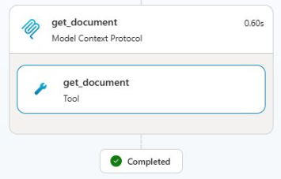

Data · Cloud

ITGlue MCP Server
A read-only MCP server exposing our MSP's ITGlue documentation and Datto RMM devices to a Copilot Studio agent — SQLite full-text + Azure OpenAI vector search, a hash-checked sync layer, and a narrow allowlisted way to run RMM jobs.